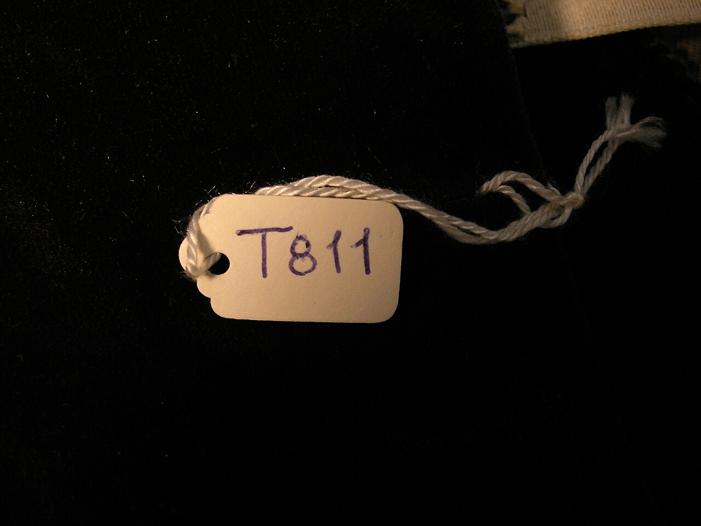
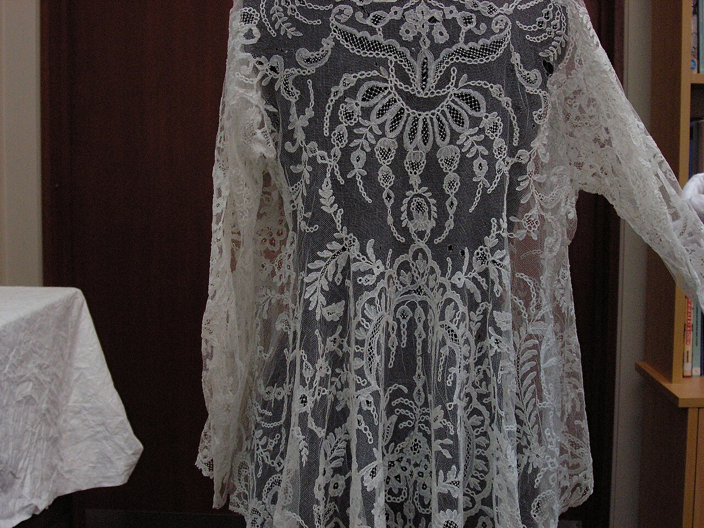
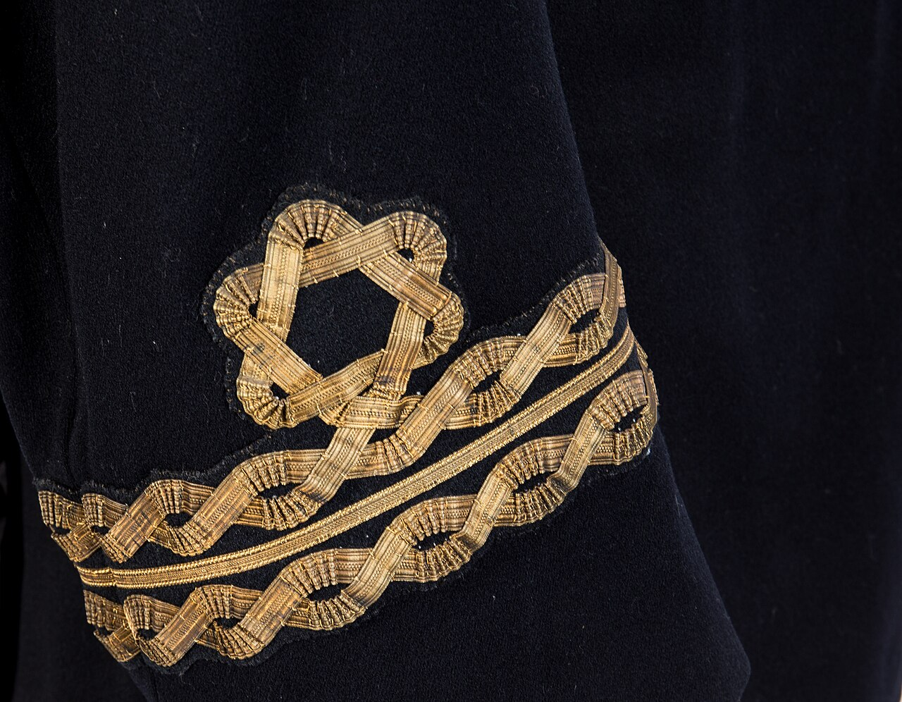

Established at 181 Mercer Street, COTTONTRUCKER exists to bridge centuries of European guild tradition with contemporary metropolitan demands in Jacket.


Our workshop techniques trace directly back to classical guildhalls, honoring human hands over automation.

Controlled atmospheric chambers eliminate particulate contamination during critical bench assembly.
Direct supply covenants ensure 100% fair artisan compensation and sustainable harvest frameworks.